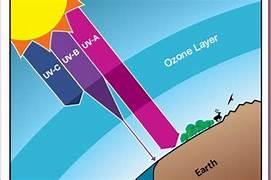

Radiasi: Memahami Energi yang Terpancar di Sekitar Kita
Radiasi adalah fenomena alam yang sering kali menimbulkan kekhawatiran di masyarakat. Meskipun istilah ini terdengar menakutkan, pemahaman yang tepat tentang radiasi dapat membantu kita mengenali manfaat sekaligus bahayanya dalam kehidupan sehari-hari.
Apa itu radiasi?
Radiasi dapat didefinisikan sebagai energi yang dipancarkan atau dilepaskan dari suatu materi atau atom. Energi ini bergerak melalui ruang dalam bentuk gelombang atau partikel. Secara sederhana, radiasi adalah proses penyebaran energi dari sumbernya ke lingkungan sekitar.
Berbeda dengan anggapan umum, radiasi tidak selalu berasal dari ledakan besar atau reaktor nuklir. Faktanya, kita dikelilingi oleh berbagai sumber radiasi dalam kehidupan sehari-hari, mulai dari sinar matahari hingga perangkat elektronik yang kita gunakan.
Sumber-Sumber Radiasi di Sekitar Kita
1. Radiasi Kosmik
Radiasi kosmik berasal dari bintang-bintang di alam semesta, terutama dari matahari sebagai bintang terdekat dengan Bumi. Untungnya, atmosfer Bumi dengan ketebalan sekitar 1000 kilometer berfungsi sebagai pelindung alami yang menahan sebagian besar radiasi ini. Meski begitu, sebagian radiasi tetap mencapai permukaan Bumi dalam jumlah yang relatif aman.
2. Unsur Radioaktif di Bumi
Planet kita mengandung unsur-unsur radioaktif alami seperti uranium, torium, dan radon. Unsur-unsur ini mengalami peluruhan radioaktif ketika inti atomnya mencari kestabilan, menghasilkan radiasi ion sebagai produk sampingannya.
3. Radiasi dari Tubuh Manusia
Tubuh manusia sendiri menghasilkan radiasi dalam jumlah sangat kecil melalui zat seperti kalium-40. Ketika sel-sel tubuh melakukan metabolisme, zat ini melepaskan radiasi yang tidak berbahaya bagi kita
4. Radiasi Buatan Manusia
Manusia telah menciptakan berbagai teknologi yang memancarkan radiasi, mulai dari tingkat rendah seperti smartphone dan komputer, hingga tingkat tinggi seperti pembangkit listrik tenaga nuklir dan senjata nuklir.
Klasifikasi Radiasi
Berdasarkan Massa
Radiasi Elektromagnetik: Jenis radiasi ini tidak memiliki massa dan merupakan kombinasi medan magnet dan medan listrik. Contohnya meliputi cahaya tampak, gelombang radio, sinar-X, dan inframerah.
Radiasi Partikel: Radiasi yang memiliki massa dan mampu memindahkan energi kinetik ke objek yang ditumbuknya. Radiasi ini juga dikenal sebagai radiasi korpuskuler.
Berdasarkan Muatan Listrik
Radiasi Pengion: Radiasi yang mampu menghasilkan ion (partikel bermuatan listrik) ketika berinteraksi dengan materi. Jenis radiasi ini memiliki energi yang cukup tinggi untuk mengubah struktur atom.
Radiasi Non-pengion Radiasi yang tidak menghasilkan ion saat berinteraksi dengan materi. Umumnya memiliki energi yang lebih rendah dibandingkan radiasi pengion.
Berdasarkan Asal
Radiasi Alam Muncul secara alami dari proses-proses di alam, seperti sinar kosmis dan peluruhan unsur radioaktif alami.
Radiasi Buatan Dihasilkan dari aktivitas dan teknologi yang diciptakan manusia, seperti reaktor nuklir, alat medis, dan perangkat elektronik.
Tingkat Bahaya Radiasi
Tingkat I: Radiasi Rendah
Radiasi alami dengan paparan rendah yang berasal dari lingkungan sekitar. Umumnya tidak menimbulkan bahaya bagi kesehatan manusia karena intensitasnya yang minimal.
Tingkat II: Radiasi Rendah-Sedang
Sedikit lebih tinggi dari tingkat I namun masih dalam batas aman. Radiasi ini umumnya berasal dari sumber alami dan tidak menimbulkan efek kesehatan yang signifikan.
Tingkat III: Radiasi Berbahaya
Paparan berulang dapat memicu penyakit serius seperti leukemia dan kanker tiroid. Efek kesehatan mungkin tidak langsung terlihat namun berkembang secara bertahap dalam jangka panjang.
Tingkat IV: Radiasi Sangat Berbahaya
Satu kali paparan dapat menyebabkan gejala langsung seperti mual, muntah, diare, dan kelelahan ekstrem. Jika tidak ditangani, dalam beberapa minggu dapat terjadi kerontokan rambut dan luka bakar pada kulit.
Tingkat V: Radiasi Mematikan
Tingkat paling berbahaya yang menyebabkan kerusakan organ tubuh, kehilangan sel darah merah, luka bakar parah, dan kerontokan rambut. Pada tingkat ini, korban dapat pingsan dan meninggal dalam hitungan jam hingga hari.
Manfaat Radiasi dalam Kehidupan
Meskipun berbahaya, radiasi juga memberikan manfaat penting dalam berbagai bidang:
Bidang Medis
• Sinar-X: Digunakan untuk memeriksa kondisi organ tubuh tanpa operasi.
• Radioterapi: Membantu pengobatan kanker dengan menargetkan sel-sel kanker.
• Diagnostik: Membantu mendeteksi berbagai penyakit sejak dini.
Keamanan
• Pemeriksaan Bagasi: Sinar-X di bandara mendeteksi bahan berbahaya tanpa membuka setiap koper
• Deteksi Narkotika: Membantu mengidentifikasi obat-obatan terlarang.
Energi
• Pembangkit Listrik Tenaga Nuklir: Menghasilkan listrik dalam jumlah besar dengan emisi karbon rendah.
Peristiwa Bersejarah Terkait Radiasi
Tragedi Chernobyl (1986)
Ledakan reaktor nuklir di Ukraina ini merupakan bencana nuklir terburuk dalam sejarah. Ribuan orang meninggal akibat ledakan dan paparan radiasi, sementara kota Pripyat berubah menjadi kota mati setelah seluruh penduduknya harus diungsikan.
Bom Atom Hiroshima dan Nagasaki (1945)
Penggunaan senjata nuklir di akhir Perang Dunia II menunjukkan dampak destruktif radiasi tingkat tinggi. Korban tidak hanya dari ledakan, tetapi juga dari paparan radiasi yang mematikan.
Tips Melindungi Diri dari Radiasi Berlebihan
1. Batasi Penggunaan Perangkat Elektronik: Kurangi waktu penggunaan smartphone dan komputer.
2. Gunakan Pelindung: Saat terpapar sumber radiasi medis, pastikan menggunakan pelindung yang sesuai.
3. Jaga Jarak: Semakin jauh dari sumber radiasi, semakin rendah paparannya.
4. Pahami Sumbernya: Kenali sumber radiasi di sekitar Anda untuk menghindari paparan berlebihan.
Kesimpulan
Radiasi adalah bagian dari kehidupan kita yang tidak dapat dihindari sepenuhnya. Yang terpenting adalah memahami tingkat paparan dan mengambil langkah-langkah pencegahan yang tepat. Dengan pengetahuan yang benar, kita dapat memanfaatkan radiasi untuk kepentingan positif sambil meminimalkan risikonya.
Ingatlah bahwa tidak semua radiasi itu berbahaya, dan banyak radiasi alami di sekitar kita yang berada dalam batas aman. Namun, kewaspadaan tetap diperlukan, terutama terhadap sumber radiasi buatan dengan intensitas tinggi.